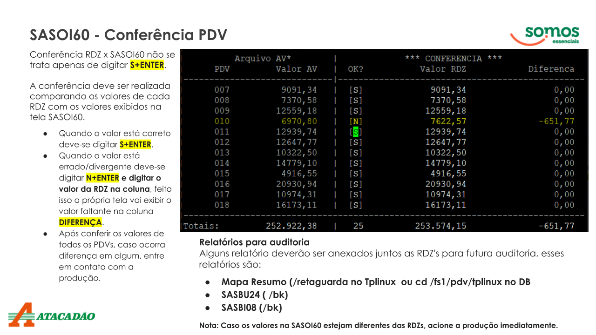

Batch é um termo que pode referir-se a um serviço de processamento em lote, a um arquivo de script ou a um modo de processamento de dados:
Batch como serviço
É um serviço gerenciado que permite programar, enfileirar e executar procesamento em lote
Batch como Arquivo
É um arquivo de script que contém uma série de comandos que podem ser executado em sequência pelo interpretador de comandos. Os arquivos do Batch São identificados pelas extensões .bat ou .cmd. Os processos batch são executados em períodos onde os recursos computacionais são menos ocupados.
1° Gerar o Arquivo do Balanço
Antes de começar, caso o Estoquista não conseguir iniciar o balanço ou o mesmo solicitar, primeiro checar o arquivo no servidor DB se o arquvo já foi gerado.
Abra o putty: servidor SAVE; digita antesbatch020 uma lista de arquivos das filias regionais e da matriz vai aperecer, os arquivos que constar em vermelho significa não gerou aínda se for verde o arquivo já foi gerado, caso se arquivo set111ddmmaa está em vermelho, vá ao diretório /fs1/integra e crie o arquivo em branco.
No servidopr SRVSAVE: Digite i para ir na /fs1/integra
Digite: touch set111ddmmaa.txt (sempre com a daa do dia)
2° Checagens Pré Batch
Checagem o Filesystem
Sempre virificar os porcentagens do files /FS1, /FS2 E BACKUP.
No putty servidor DB; digite: df
Rodar o SJBPEDI
Vericar primeiro se o SJBPEDI foi executado através da tela SADOU40.
Importante: o SJBPEDI deve ser rodado; de Segunda a Sexta-feira de 22:00hrs até as 23:00hrs e Sábado, Domingo e Feriados a partir de 12:00hrs
Para rodar: Servidor DBusuario@dbFFF:/fs1/save:dfrun exe sjbou02
informe o numero da filial
verifique se a data está com o dia atual
digite SJBPEDI e tecle S enter até terminar.
Fechamento dos PDV's
Para começar imprimir a folha de Fechamento dos PDV's, depois as vendas da loja terminar tirar a RDZ de cada caixa e fechar os caixas. Anotar o valor de venda liquida dos respectivos caixas na folha de Fechamento.
verifique se a Moedeira tirou a saida, verifique se o Apoio finalizou os fechamentos, batimentos dos caixas, entre no tplinux-webapp e imprimir os seguintes relatorios:
Monitor: Relatotio De Vendas: mandar para imprimir; FORMAS DE PAGAMENTOS e CUPONS CANCELADOS
Atacadão: Relatorios: mandar para imprimir; INTERVENÇÃO SOBRE CANCELAMENTOS
Bloquear o Sistema
Antes de colocar os Job's do Batch para rodar é importante deixar o sistema totalmente livre, primeiro tem bloquear o sistema e derrubar Todos os usuários que esteve presos. Para bloquear abra o Putty e logue no servidor DB dar o comando: dfrun exe sadbu01 depois verificar se tem usuario que está preso com o comando: who -u esse comando lista os usuários que estão logados no sistema caso se teve. Caso se teve usuários logados no sistema derruba-los com o comando: sudo kill -9 + o número do usuários. Depois dá o comando: ps -ef | grep dfrun esse comando lista as telas que ficou abertas no Putty, caso se esteve telas abertas no Putty dá o comando: sudo kill -9 + o número do pocesso para derrubar o processo. Depois alterne para o servidor SRVSAVE e repetir os procedimentos de cima.
Inicia o END-OF-DAY
Abra o putty, servidor TPLINUX – SRVTPL, no menu , selecione
a opção: SOD / EOD / STATUS, OPÇÃO FINALIZAR DIA TPLINUX.
tecle Enter 4 vezes.
Em seguida abre o Putty acessar a tela: dfrun exe sjbou02 inicie o job SJBDD00
3° BACKUP
Salva DIARIO_ANTES
Para fazer a salva, acesse o programa NETBACKUP, acessar DEVICE MONITOR para verificar se o drive reconhecer a fita e seu ID: depois acessar POLICIES selecione a opção DIARIO_ANTES, aperte com botão direito no MANUAL BACKUP, e clique OK para iniciar a salva. Depois pode acompahnar a salva acesar ACTIVITY MONITOR.
Caso o Robot Storage estaja com problema, será necessásrio solicitar a salva em disco para a Matriz, para isso é preciso abra um chamado com programa CSC: TIPO INCIDENTE; SETOR BACKUP; ASSUNTO SALVA EM DISCO e invie o número do chamado para o correspondente da Matriz, esse backup pode ser acompahnado pelo comando: w ou top Assim que sumir o processo RMAN-TARGET a salva estará concluida. OBS: Após o termino, a salva em disco não apágar os conteúdos no diretório, será necessásrio apagar esses conteúdos manualmente. Portanto antes de iniciar o SJBDD01 entrar no servidor DB digote k para ir no diretório bk dá o comando: rm *
4ª Checagem dos valores
Checagem de Valores dos PDV's
Ainda no serividor Tplinux aguarde o AV do dia for gerado, depois que o AV foi gerado abra o Putty servidor DB comando: dfrun exe sasoi60 Verifique cada venda por PDV. (caso dê algum divergência ligue para a Matriz informar o caso e use a tela SDPOI50)

Valores do Caixas Empresa
Para checar os valores dos caixas empresa abra o Putty servidor DB comando: dfrun exe svdoi70 Na tela SVDOI70 anote os valores VND Comercialização e DEV. VND COMERC. calcule: VND Comercialização - DEV. VND COMERC. e some o resultado com a SASOI60. Depois acessar o mapeamento retaguarda somente pelo programa WINSCP copia o arquivo mapa_resume para pasta mapa, depois localizar o arquivo no explorer mapeamento portal pasta mapa e mandar para imprimir.
5° Inicio do Batchfff
Checagem dos arquivos Antesbtchfff
Antes de iniciar o job SJBDD01 é extremamente importante checar os arquivos ANTESBATCHfff se chegar, todos esses arquivos deve está OK sinal que os arquivos já estão na integra, caso contrário não inicia o SJBDD01.
Iniciar SJBDD01
Após o terminou do Backup Diario_Antes, hora de iniciar o primeiro job do Batch SJBDD01. Abra o Putty servidor DB comando: dfrun exe sjbou02
Importante: confira a data do batch e digite o numero da filial e SJBDD01.
ATENÇÂO: Atentar-se a 4ª sequencia do DD01, pois a mesma pode dar erro de ruptura .BAD e serra necessásrio entrar no /fs1/dat e ter o procedimento CLEN UP para fazer o tratamento.
No SJBDD01 exestem 4 relatorios que precisa ser checados:
SASBU24: Na sequencia 290
SASBI08: Na sequencia 300
SRTBI01: Na sequencia 510
SAEBI05: Na sequencia 610
Para visualizar esses relatorios: Abra outra instância do Putty servidor DB digite K para ir na integra dentro da integra digite: vi nome do arquivo* (ex: sas24*)
precisa fazer o mesmo para cada um desses arquivos e anotar o valor final na folha da rotina batch. Para sas08* após aberturaa do arquivo digite: /DIV dpois tecle shift+g para exibir o valor, os dois valores tem que dar o mesmo, assim por o arquivo srt01*
SJBDD02
Depois dp processo DD01 ainda na SJBOU02 inicie o SJBDD02 nesse job gerar os principais relatorios do batch. Durante o processo DD02 é importante checar se a fila de impressora de preçcos esta ativa, pois na sequencia de 590 e 600 irá gerar a emissão das etiquetas de preços do batch.
SJBDD03
Após o termino DD02 ainda na tela SJBOU02 inicie o SJBDD03, neste job é feita a alteração da data do batch para o dia seguuinte no programa SADBU09.
SJBDD04
Após o termino do DD03 ainda na tela SJBOU02 inicie o SJBDD04, nesse job gerar os arquivos pré-abertura e final gerar o programa Desbloqueio do sistema.
Salva Após
Após o termino do DD04 abrir o programa NETBACKUP inicie a salva DIARIO_APÒS.
Para fazer a salva, acesse o programa NETBACKUP, acessar DEVICE MONITOR para verificar se o drive reconhecer a fita e seu ID: depois acessar POLICIES selecione a opção DIARIO_APÒS, aperte com botão direito no MANUAL BACKUP, e clique OK para iniciar a salva. Depois pode acompahnar a salva acesar ACTIVITY MONITOR.
Caso o Robot Storage estaja com problema, será necessásrio solicitar a salva em disco para a Matriz, para isso é preciso abra um chamado com programa CSC: TIPO INCIDENTE; SETOR BACKUP; ASSUNTO SALVA EM DISCO e invie o número do chamado para o correspondente da Matriz, esse backup pode ser acompahnado pelo comando: w ou top, assim que sumir o processo RMAN-TARGET a salva estará concluida.
Em seguida Habilita os programas SASOU46 e SASOU47 na tela SVDOU23.
START-OF-DAY (SOD)
ATENÇÂO: Não reinicie o servidor Tplinux, nem execute o START-OF-DAY entre 02:00hrs 03:00hrs e entre 04:30hrs e 05:30hrs
Para iniciar o dia abra o putty, servidor TPLINUX – SRVTPL, no menu , selecione
a opção: SOD / EOD / STATUS opção INICIA_O_DIA TPLINUX.
tecle Enter.